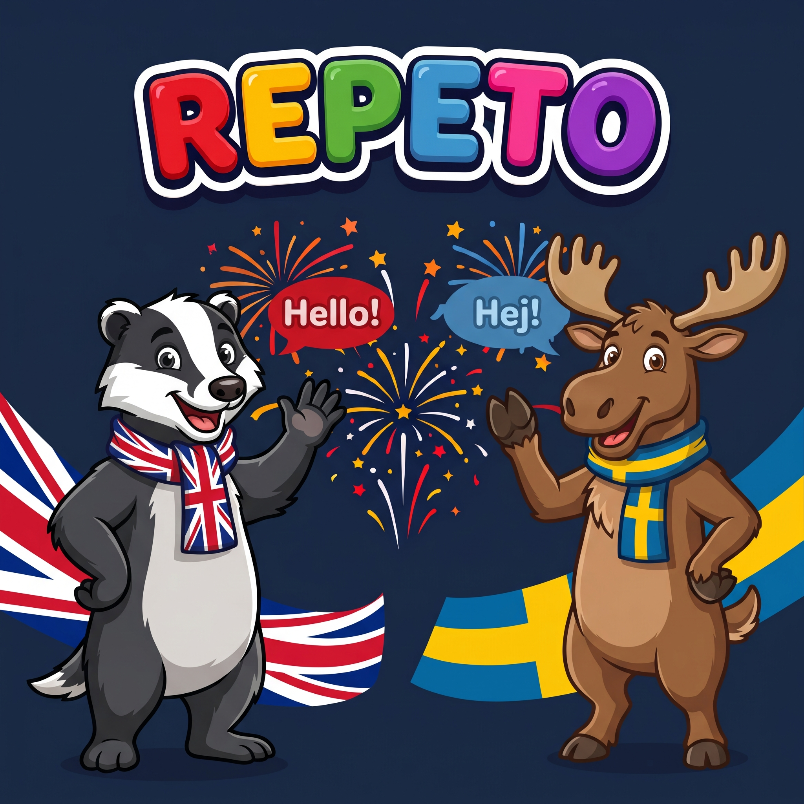
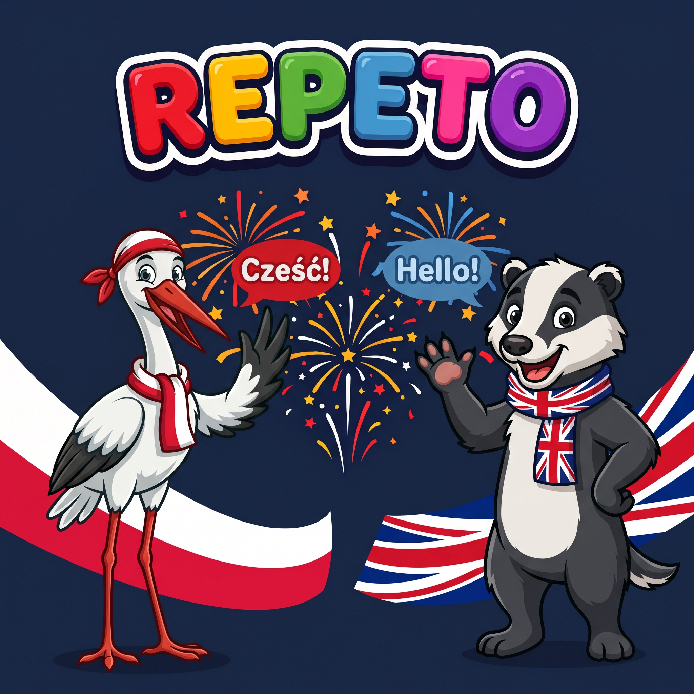
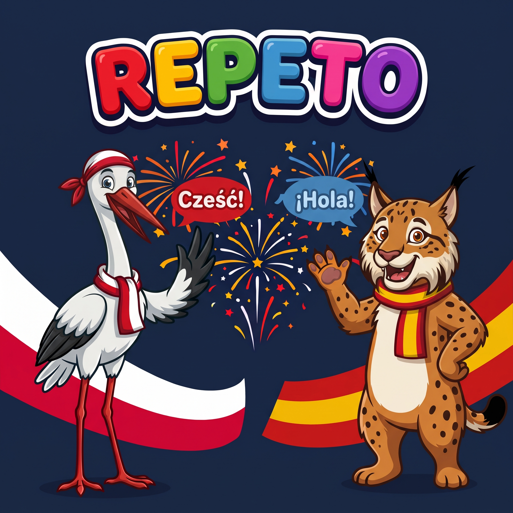
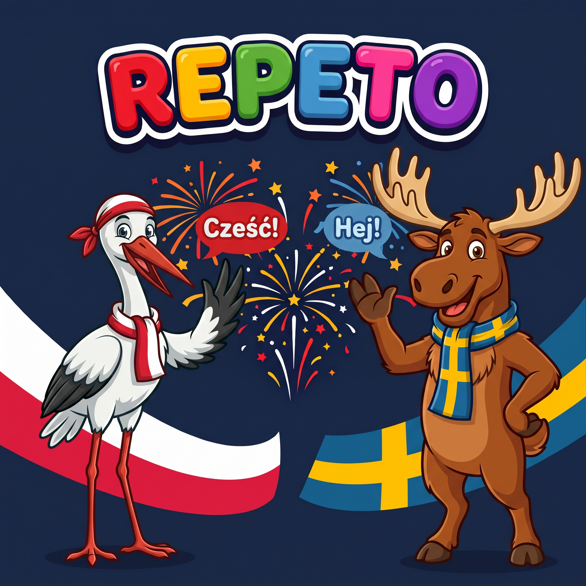
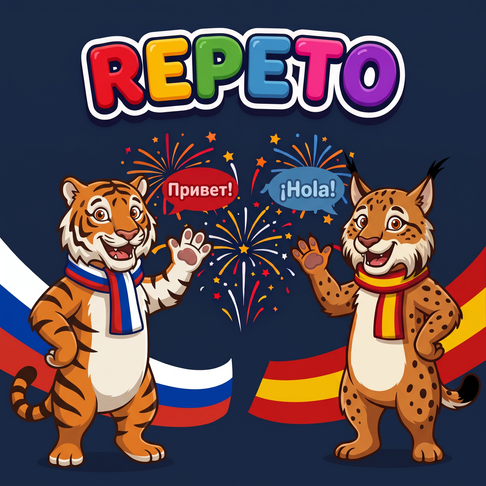
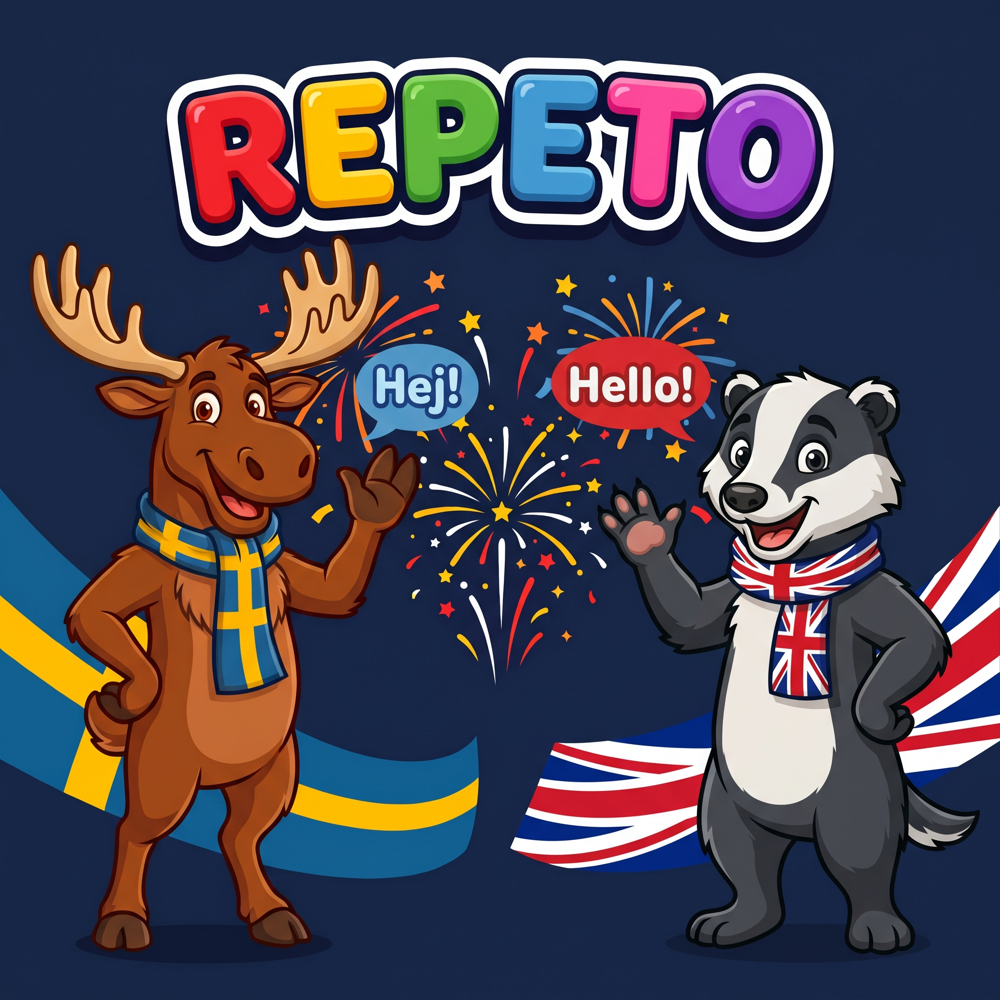
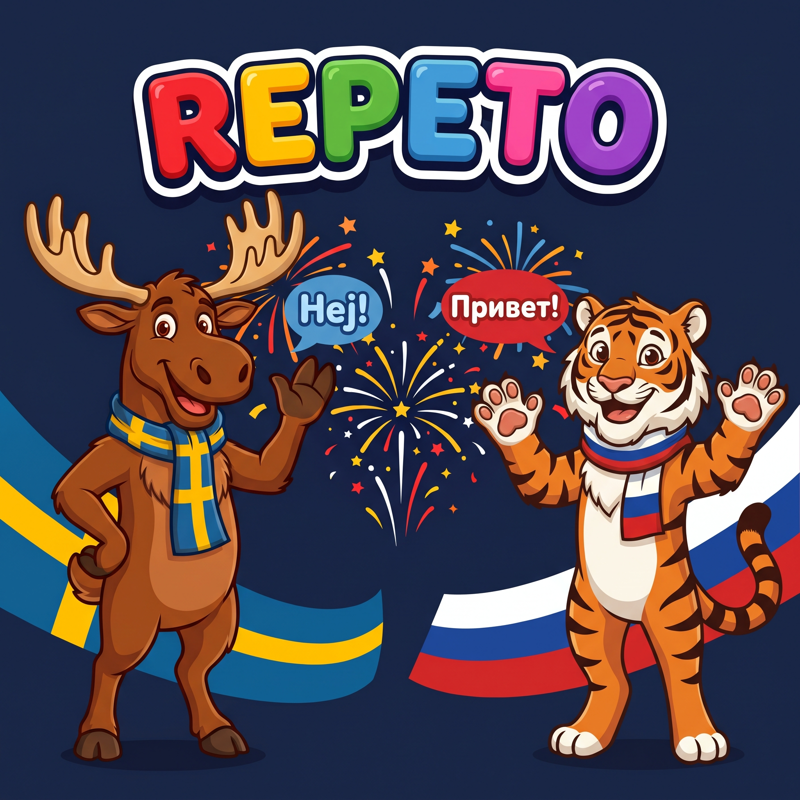

Repeto
Språkkurser som podcast för nybörjare i alla åldrar. Hör ett ord eller en mening på svenska, säg det själv på det nya språket och lyssna sedan på svaret.
Kursy językowe dla początkujących: słuchaj wskazówek po polsku, odpowiadaj w przerwach i powtarzaj za nagraniem.
Audio courses for beginners: listen to English prompts, answer in the pauses and repeat after the recording.
Аудиокурсы для начинающих: слушай подсказки по-русски, отвечай во время пауз и повторяй за диктором.

Learn Swedish by listening and speaking, with English prompts to guide you. Repeto is an audio course for beginners of all ages: children, parents, grandparents and anyone who wants to start learning Swedish. No previous knowledge or textbook is needed.

Ucz się angielskiego, słuchając i mówiąc – z polskim jako wsparciem. Repeto to kurs audio dla początkujących w każdym wieku: dzieci, rodziców, dziadków i wszystkich, którzy chcą zacząć naukę angielskiego. Nie potrzebujesz wcześniejszej wiedzy ani podręcznika.

Ucz się hiszpańskiego, słuchając i mówiąc – z polskim jako wsparciem. Repeto to kurs audio dla początkujących w każdym wieku: dzieci, rodziców, dziadków i wszystkich, którzy chcą zacząć naukę hiszpańskiego. Nie potrzebujesz wcześniejszej wiedzy ani podręcznika.

Ucz się szwedzkiego, słuchając i mówiąc – z polskim jako wsparciem. Repeto to kurs audio dla początkujących w każdym wieku: dzieci, rodziców, dziadków i wszystkich, którzy chcą zacząć naukę szwedzkiego. Nie potrzebujesz wcześniejszej wiedzy ani podręcznika.

Учи испанский: слушай и говори с подсказками на русском. Repeto — аудиокурс для начинающих любого возраста: детей, родителей, бабушек, дедушек и всех, кто хочет начать учить испанский. Предварительные знания и учебник не нужны.

Lär dig engelska genom att lyssna och prata – med svenska som stöd. Repeto är en lyssningskurs för nybörjare i alla åldrar: barn, föräldrar, mor- och farföräldrar och alla som vill komma igång med engelska. Ingen förkunskap och ingen bok behövs.

Lär dig polska genom att lyssna och prata – med svenska som stöd. Repeto är en lyssningskurs för nybörjare i alla åldrar: barn, föräldrar, mor- och farföräldrar och alla som vill komma igång med polska. Ingen förkunskap och ingen bok behövs.

Lär dig ryska genom att lyssna och prata – med svenska som stöd. Repeto är en lyssningskurs för nybörjare i alla åldrar: barn, föräldrar, mor- och farföräldrar och alla som vill komma igång med ryska. Ingen förkunskap och ingen bok behövs.